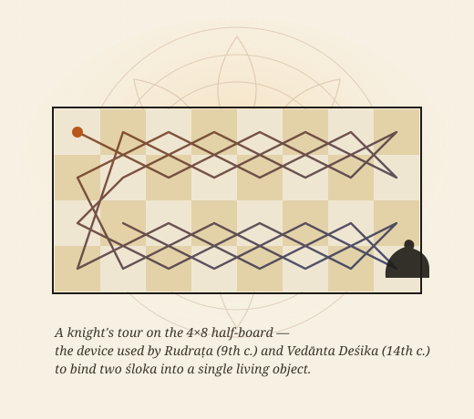

Bandha बन्ध
Verses whose syllables, plotted on a grid, draw a recognisable figure. The reading rule lives in the figure: travel the spokes of a wheel, the petals of a lotus, the parallel runs of a drum.
A thousand years before Euler, Sanskrit poets were already encoding knight's tours, magic squares, and palindromic surfaces into living poems. Chitrakāvya rebuilds these objects as computational artefacts — and asks what they teach us about an alternative history of computing.

The thesis
Chitrakāvya — literally picture-poem — is a tradition of Sanskrit verse that survives only when read in two media at once: as sound, and as shape. The poet writes a śloka whose syllables, when laid out on a grid, form a wheel, a lotus, a drum, a sword, or a chessboard, and whose readings trace paths through that figure: along petals, around spokes, in palindromic symmetry, or along the L-jumps of a knight. The constraints are severe and the meanings are precise. The same artefact is a poem, a diagram, and an algorithm — three faces of one composition.
This project — originally hosted by the Computational Sciences Laboratory at IIIT-Bangalore — collects these objects, restores their broken visualisations, and treats them as exhibits in a longer history of computation as form. The site you are reading is a fresh build of that archive, with new illustrations, working interactive demos, and references repaired against Wikipedia, peer-reviewed journals, and open-source code.
स्थितः समः सरः मर्मा रामा रासः समः सर: ।
सरः समः सरामारा मार्मरः समः स्थितः ॥ — Sarvatobhadra: each line a palindrome; the whole stanza a fixed point under reflection.
Enter the project
A short orientation
Verses whose syllables, plotted on a grid, draw a recognisable figure. The reading rule lives in the figure: travel the spokes of a wheel, the petals of a lotus, the parallel runs of a drum.
Two śloka written so that the second emerges from the first by a knight's tour over a 4×8 board. The artefact is a verse, a Hamiltonian path, and a riddle in one.
"Auspicious in every direction": a verse that reads identically forward, backward, top-to-bottom, and bottom-to-top. A four-fold palindrome across a square grid.
The claim
We tend to read the history of computing as a march of mechanisms — abacus, clockwork, valve, transistor, GPU. But computation is not only the manipulation of state; it is the act of specifying a structure precisely enough that someone else can reproduce it. By that older definition, a chitrakāvya verse is a program: an exact recipe for a shape, a path, and a meaning, encoded in a substrate (Sanskrit) chosen because its grammar permits the recipe to compile.
This site treats the corpus as exactly that — runnable specifications. Each artefact is presented with three things: the verse itself, a reconstructed visualisation, and a pointer to the modern algorithmic problem it encodes (Hamiltonian path, magic square, palindrome, lipogram, constrained composition). The intention is research, not romance: where a primary source is contested, we say so, and we link the strongest secondary scholarship we can find.
iiitb.ac.in/csl/projects/Chitrakavya/. Where original
external links no longer resolve, they have been replaced with the closest
peer-reviewed paper, Wikipedia article, or open-source repository — see
Resources for the link map.